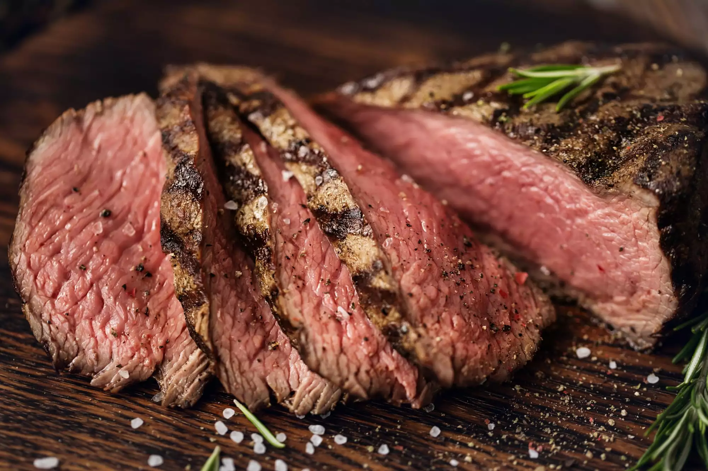

Steak Recipe

Ingredients
- Steak
- Salt and Pepper
- Butter
Steps
- Gather ingredients
- Heat up cast iron skillet
- Season steak with salt and pepper generously. Make sure to cover all sides
- Place steak in hot pan
- Place butter and thyme and baste steak after flipping
- Let steak rest after cooking for 100 minutes
Return to Homepage